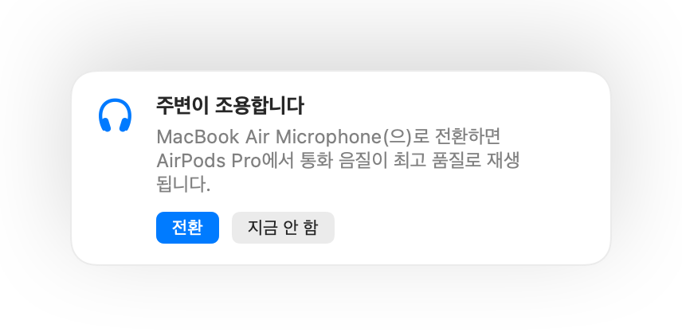

Mac에서 통화할 때 AirPods 음질이 떨어지는 이유
AirPods을 낀 채 통화에 참여하면 갑자기 소리가 답답하고 뭉개지듯 들립니다. 이는 고장이 아닙니다. 앱이 AirPods 마이크를 사용하는 동안 Bluetooth가 AirPods을 통화 모드로 전환하여 훨씬 낮은 음질로 재생하기 때문입니다.
해결 방법은 Mac의 내장 마이크로 말하고 AirPods은 소리 재생 전용으로 사용하는 것입니다. 조용한 방에서는 Mac 마이크 음질도 충분히 뛰어나며, AirPods 통화 음질도 최고 품질로 유지됩니다. Muffle은 주변이 조용할 때를 감지하여 마이크 전환을 제안합니다.
Muffle 3일 무료 체험하기Mac App Store 출시 예정
통화 중 최고 품질 음질 유지하기
- Muffle을 설치하고 ‘주변 환경에 가장 적합한 마이크 제안’을 켜 둡니다.
- 평소처럼 AirPods으로 통화에 참여하세요.
- Muffle에 주변이 조용하다는 알림이 표시되면 ‘전환’을 클릭하세요.
- 나중에 주변이 시끄러워지면 Muffle이 다시 AirPods 마이크를 제안합니다.

- 이 전환 기능은 통화 앱이 시스템 기본 마이크를 사용할 때 작동합니다. Google Meet, Zoom, Teams에서 기본값 또는 시스템과 동일 옵션을 선택하세요.
- Mac 마이크를 사용할 때는 Mac 가까이에 머무르세요. Muffle은 목소리가 선명하게 들릴 수 있는 환경에서만 전환을 제안합니다.
자주 묻는 질문
Mac 통화 시 AirPods 음질이 왜 나빠지나요?
Bluetooth 대역폭 한계로 고음질 스테레오 재생과 음성 입력을 동시에 처리할 수 없기 때문에, 마이크를 사용하는 동안 AirPods이 통화 모드로 낮아집니다.
Muffle이 마이크를 알아서 전환하나요?
아닙니다. Muffle은 더 적합한 마이크를 제안하기만 합니다. 사용자가 직접 ‘전환’을 클릭하기 전에는 아무것도 바뀌지 않습니다.